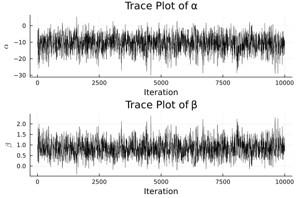
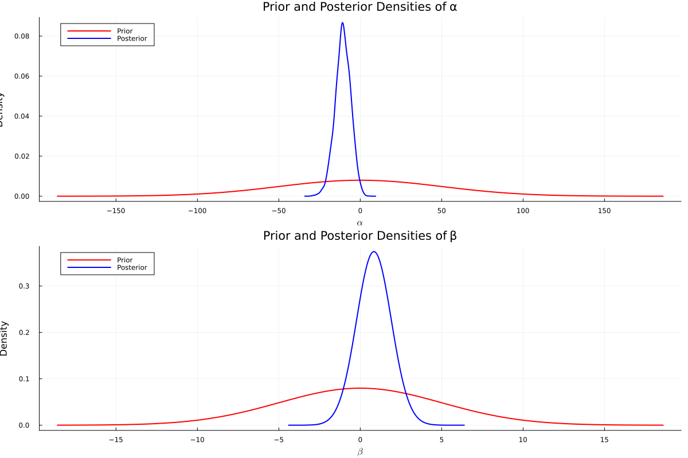
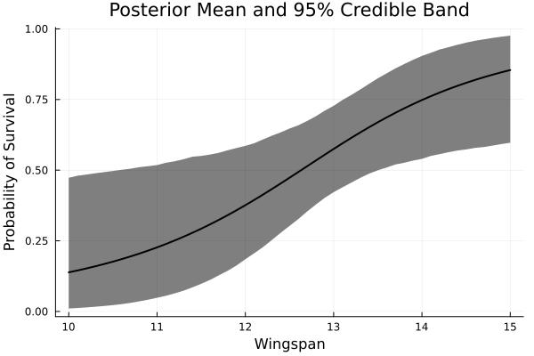

Exercise 10.2 Solution Example - Hoff, A First Course in Bayesian Statistical Methods
標準ベイズ統計学 演習問題 10.2 解答例
a)
Answer
b)
Answer
Let \(p\) be the probability of nesting success. Then,
\begin{align*} \alpha + \beta x_i &= \text{logit } p \\ &= \log \frac{p}{1-p}. \\ \end{align*}Thus, if we have no prior information about the probability of nesting success, we can set the prior expectation of \(\alpha + \beta x_i\) to 0, \(p = 0.5\). Also, we have no prior information about the relationship between wingspan and nesting success, so we can set the prior expectation of \(\beta\) to 0. Consequently, we can set the prior expectation of \(\alpha\) to 0.
Next, we consider the prior variance of \(\alpha\) and \(\beta\). Suppose temporarily that \(\beta = 0\). If the prior variance of \(\alpha\) is set to \(2500\), \(\alpha\) ranges between \(-100\) and \(100\) for 95% probability, and the odds ratio should be between \(\exp(-100) \approx 3.7 \times 10^{-44}\) and \(\exp(100) \approx 2.7 \times 10^{43}\). This prior can be seen quite uninformative. Similarly, considering \(x_i\) ranges between 10 and 15, we can set the prior variance of \(\beta\) to 25. Thus, we can set the prior distribution of \(\alpha\) and \(\beta\) as follows:
\begin{align*} \alpha &\sim \mathcal{N}(0, 2500) \\ \beta &\sim \mathcal{N}(0, 25) \\ \end{align*}c)
Answer
using BayesPlots
using DelimitedFiles
using Distributions
using LaTeXStrings
using LinearAlgebra
using MCMCChains
using Plots
using Plots.Measures
using Random
using StatsBase
using StatsModels
using StatsPlots
using GLM
data = readdlm("../../Exercises/msparrownest.dat")
y = data[:, 1]
x = data[:, 2]
# add intercept
x = hcat(ones(length(x)), x)
function MetropolisLogit(S, y, x, β₀, Σ₀, var_prop; seed=123)
# S: number of samples
# y: response vector
# x: predictor vector
# β₀: prior mean of β
# Σ₀: prior covariance of β
# var_prop: proposal variance
function logistic(ψ)
return exp(ψ) / (1 + exp(ψ))
end
Random.seed!(seed)
q = length(β₀)
BETA = Matrix{Float64}(undef, S, q)
acs = 0 # acceptance rate
# Initialize
glmfit = glm(x, y, Binomial(), LogitLink())
β = coef(glmfit)
# Metropolis algorithm
for s in 1:S
p = logistic.(x*β)
# Draw β*
β_star = rand(MvNormal(β, var_prop))
p_star = logistic.(x*β_star)
log_r = sum(logpdf.(Bernoulli.(p_star), y)) +
logpdf(MvNormal(β_star, Σ₀), β) -
sum(logpdf.(Bernoulli.(p), y)) -
logpdf(MvNormal(β, Σ₀), β_star)
if log(rand()) < log_r
β = β_star
acs += 1
end
BETA[s, :] = β
end
return BETA, acs/S
end
# Prior
β₀ = [0, 0]
Σ₀ = [2500 0; 0 25]
S = 10000
# search best proposal variance
for i in 1:20
# Proposal variance
var_prop = i*inv(x'x)
BETA, acs = MetropolisLogit(S, y, x, β₀, Σ₀, var_prop)
println("i = ", i)
println("acceptance rate = ", acs)
ess_α = MCMCDiagnosticTools.ess(BETA[:,1])
ess_β = MCMCDiagnosticTools.ess(BETA[:,2])
println("ess_α = ", ess_α)
println("ess_β = ", ess_β)
end
var_prop = 17*inv(x'x)
BETA, acs = MetropolisLogit(S, y, x, β₀, Σ₀, var_prop)
ess(MCMCChains.Chains(BETA))
ESS
parameters ess ess_per_sec
Symbol Float64 Missing
param_1 1261.2209 missing
param_2 1248.0384 missing

d)
Answer

e)
Answer
x_grid = 10:0.1:15
x_grid = hcat(ones(length(x_grid)), x_grid)
# %%
f_post = logistic.(x_grid*BETA[burnin:end, :]')
# %%
f_post_mean = mean(f_post, dims=2)
f_post_lower = map(x -> quantile(x, 0.025), eachrow(f_post))
f_post_upper = map(x -> quantile(x, 0.975), eachrow(f_post))
